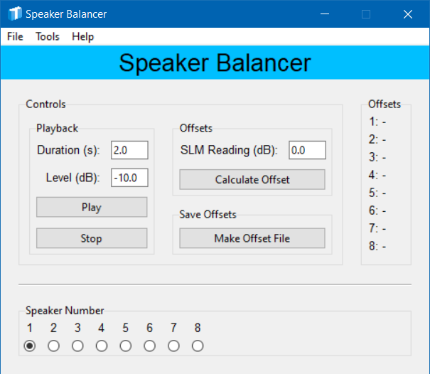
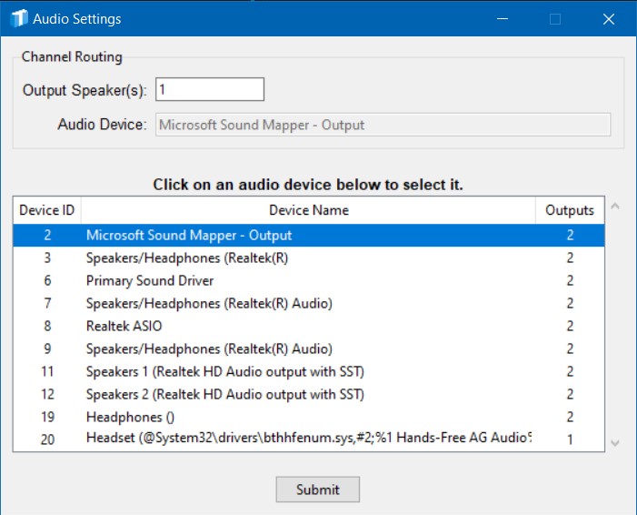
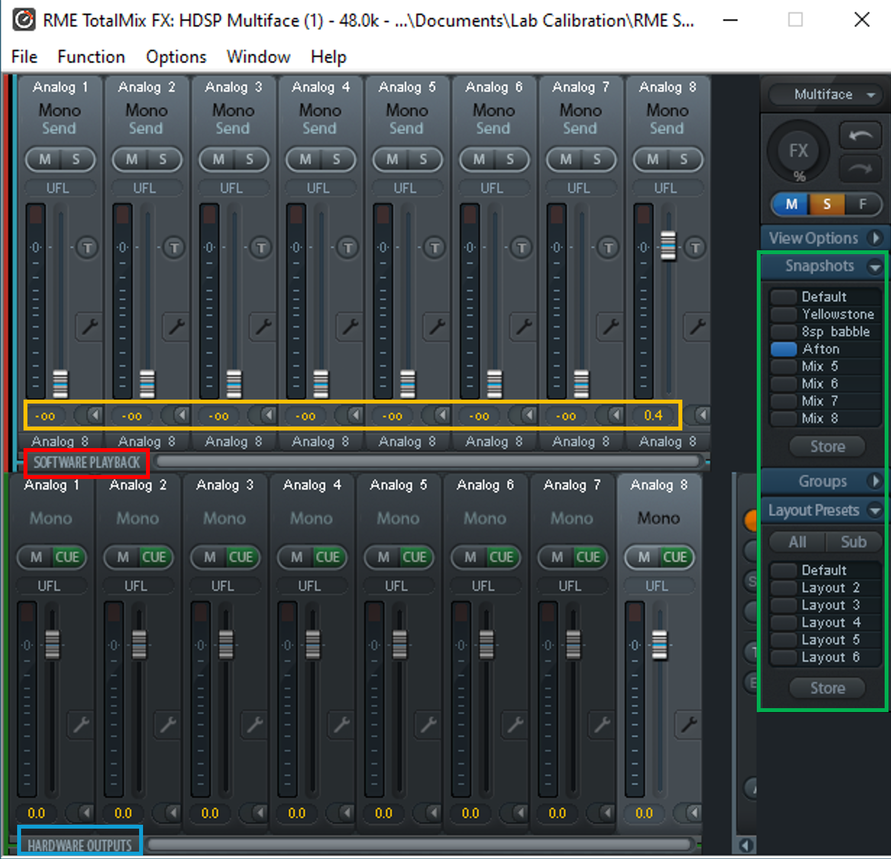

The Speaker Balancer is a useful tool for quickly balancing lab speakers using a sound level meter.
Select speakers just by clicking.
Present a white Gaussian noise to the specified speaker.
Calculate offsets (using the first speaker as a reference). Easily save offsets to CSV, and monitor offsets in real time as they appear on screen.
This is a compiled app; the executable file is stored on Starfile at: \starfile\Public\Temp\MooreT\Custom Software
Simply copy the executable file and paste to a location on the local machine.
DO NOT RUN FROM THE STARFILE SERVER. This ties up the program for others, and will result in erratic app behavior.
DO NOT RUN FROM THE STARFILE SERVER. This ties up the program for others, and will result in erratic app behavior. That's right, this statement is identical to the one above - it's just that important!
Double-click to start the application for the first time.
The Speaker Balancer offers all the controls you will need on a single screen for ease of use. Enjoy the sky blue band across the top of the screen - it's almost like being at the beach.

Duration (s): The duration of the white noise in seconds
Level (dB): The scaling factor to apply to the white noise. Adjust this level until the sound level meter reads around 70 dB A (slow).
Play button: Begin audio playback.
Stop button: Stop audio playback.
SLM Reading (dB): The value read from the sound level meter while the white noise is actively playing.
Calculate Offset button: Calculates an offset based off of the value from speaker 1 and stores that value.
The Offsets frame displays the offsets for each speaker as they are calculated. Refer to this section while updating the RME offsets using Total Mix.
The Speak Number group contains buttons for each speaker. Route the white noise to any speaker by clicking the appropriate button.
The Audio Settings window allows you to select an audio device and assign speakers for playback.
Device Selection. The Audio Settings window displays available audio devices in a table (see lower part of image below). Simply click to choose the desired device. Your selection will be highlighted in blue.
Important: DO NOT SELECT ANY DEVICE WITH "ASIO" IN THE NAME. SELECT "Analog (1-8)" WITH 8 OUTPUT CHANNELS. If there are multiple Analog (1-8) options, you will have to guess and check by selecting one, then trying the Tools>Test Offsets function.
Speaker Assignment. To assign a speaker for playback, enter the speaker/channel number in the entry box (see upper part of image below). Note that you must provide a speaker for each channel in the audio file. For example, if your stimulus has eight channels, you must provide a list of eight speakers. Separate numbers with spaces when providing a list of speakers. For example: 1 2 3 4 5 6 7 8.

The instructions below guide you through the process of using the app to balance the speakers in a given lab. Instructions reference the different color rectangles imposed on the image below.

pyinstaller --noconfirm --onefile --windowed --icon "C:/Users/MooTra/Code/Python/tmpy/tkgui/shared_assets/images/logo_icons/logo_full.ico" --add-data "C:/Users/MooTra/Code/Python/speaker_balancer/app_assets;app_assets/" --add-data "C:/Users/MooTra/Code/Python/tmpy;tmpy/" --paths "C:/Users/MooTra/Code/Python/tmpy" --hidden-import "numpy" --hidden-import "pandas" --hidden-import "sounddevice" --hidden-import "soundfile" --hidden-import "msoffcrypto" --hidden-import "idlelib" "C:/Users/MooTra/Code/Python/speaker_balancer/controller.py"
Please use the contact information below to submit bug reports, feature requests and any other feedback.